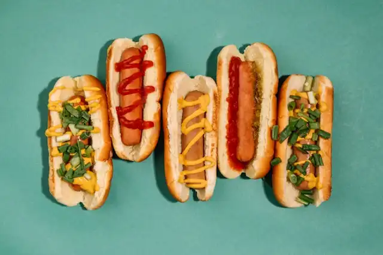

Hot Dogs
I love this hot dog recipe because it's fast, easy, and always a crowd-pleaser. It reminds me of summer cookouts and baseball games. It's simple comfort food that never goes out of style.
Ingredients
- 2 hot dog buns
- 2 beef hot dogs
- Ketchup
- Mustard
- Relish
- Chopped onions
Instructions
- Bring a pot of water to a boil. Add the hot dogs and cook for about 5 minutes, or until heated through. Optional: You can also grill or pan-fry them for a smoky flavor.
- Place each hot dog in a bun and add your favorite toppings.
- Toast the bread slices until golden brown.
- Serve with chips, fries, or a cold drink for a quick, tasty meal.